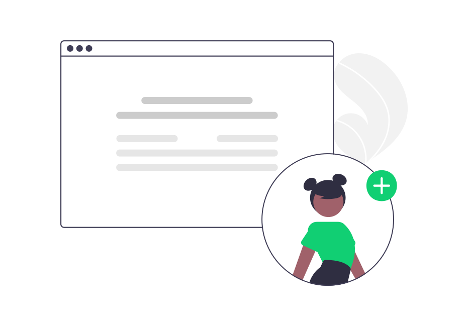
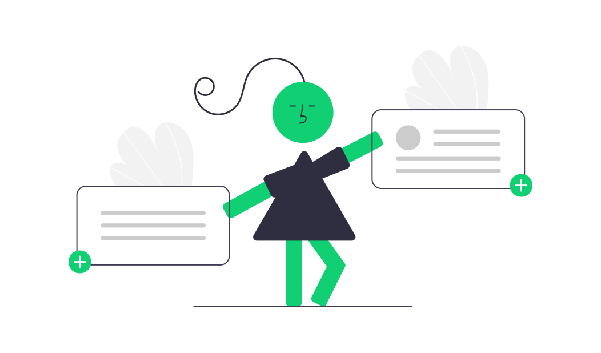

Tableau de bord
Gérez facilement les utilisateurs, les annonces et les
réservations avec notre interface intuitive.
Fonctionnalités de l'Administrateur
Accédez à toutes les fonctionnalités de gestion de
l'administrateur pour gérer les utilisateurs, les annonces et
les réservations.
Gestion complète des utilisateurs

Notre fonctionnalité CRUD vous permet de créer, lire, mettre à jour et supprimer facilement les utilisateurs.
Simplifiez votre gestion et gagnez du temps avec AtypickHouse.

Gestion des rôles
Grâce à cette fonctionnalité, vous pouvez désormais assigner,
modifier ou retirer de nouveaux rôles aux utilisateurs.
Gestion facile des réservations avec options d'édition et de
suppression
AtypickHouse offre une fonctionnalité de gestion des annonces
qui permet aux administrateurs de gérer facilement les
propriétés. Avec des options d'édition et de suppression, vous
pouvez mettre à jour les informations des annonces et
supprimer celles qui ne sont plus disponibles.

Gestion facile des catégories
Gérer facilement les catégories des annonces depuis ce pannel?
Retirez ou affectez une ou plusieurs catégorieq à l’appart de
selon ses caratériques.
Gestion des statuts
Cette rubrique vous permettra de gérer les statusts, ajoutez,
modifier, supprilez ou recherchez des statuts pour les
anonces.